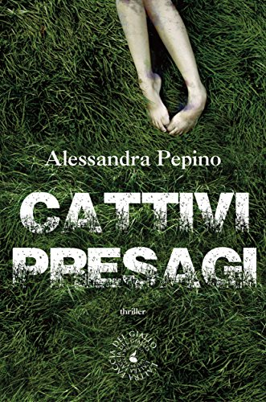

1) Benvenuta su thrillernord, siamo sempre contenti quando abbiamo la possibiltà di intervistare dei giovani autori ricchi di idee e di voglia di emergere come lo sei tu e come si evince dai tuoi due libri usciti, cattivi presagi e il ladro di ricordi, due "thriller-noir" che ti hanno portato alla ribalta in questo genere letterario. I due libri son della stessa serie, ossia dell'ispettore Jacopo Guerra, come ho scritto nelle due recensioni, nel primo libro l'ispettore guerra è una figura marginale, mentre nel secondo esplode...come mai questa scelta?
Quando ho scritto "Cattivi presagi" non avevo in mente di creare una serie; l'ho sempre considerato una sorta di esperimento letterario: un giallo atipico, una storia corale, di cui tutti e nessuno potessero essere protagonisti.
Quando, in un secondo momento, ho cominciato a ragionare sulla possibilità di un ideale seguito, mi sono trovata a dover scegliere con quale dei tanti personaggi - soltanto delineati nel primo romanzo - imbarcarmi per il secondo episodio. Jacopo Guerra era, tra i tanti, quello che meno mi aveva parlato in "Cattivi presagi" e che quindi, paradossalmente, avrebbe avuto ancora tanto da dire.
2) Secondo me cattivi presagi, aveva un qualcosa di diverso rispetto a il ladro di ricordi, ossia l'ho trovato molto bello e molto passionale, con una storia originale e a tratti esilarante, mentre il ladro di ricordi, molto più vicino al gusto di un thrillerista, l'ho trovato in alcuni tratti schematico e molto thriller-style, ossia il primo molto Napoli-style (passione, confusione, folklore) mentre il secondo Thriller-style, è stata una tua scelta, o pensi di aver sviluppato un qualcosa di diverso?
Sono due romanzi diversi, figli di un'urgenza diametralmente opposta. "Cattivi presagi" è il romanzo dell'esordio, caratterizzato dalla pura istintività, dalla voglia di raccontare. "Il ladro di ricordi" è un progetto più ragionato, meno sperimentale del precedente. Con "Cattivi presagi" non avevo intenzione di scrivere un giallo classico; volevo tessere una tela, all'interno della quale si muovesse una moltitudine di personaggi. Creare un universo. Che poi lo sfondo di questo universo si sia rivelato a tinte giallo/nere è solo un caso, frutto probabilmente della mia particolare inclinazione verso questo mondo.
Con "Il ladro di ricordi" ho dovuto invertire la rotta: ripetere lo schema del primo romanzo sarebbe stato di certo poco efficace; entrare nell'ottica della serialità significava prima di tutto dotarsi di un'identità meglio delineata e farlo, di conseguenza, nel solco di una più spiccata vocazione al thriller.
3) Quando leggo thriller scritti da donne, mi aspetto sempre di trovare l'eroina di turno o delle figure femminili molto ben delineate e forti, nei tuoi libri non ho trovato questa cosa, anzi ti voglio fare i complimenti di come sei entrata in modo credibile nei personaggi maschili e sei riusciti a dargli una personalità molto ben delineata..ti sei sentita a tuo agio nel fare questa cosa? è stato difficile entrare in un corpo maschile?
Sono felice che tu te ne sia accorto: è uno sforzo a cui tendo da sempre, quello di provare a infilarmi nei panni di chi non sono e mai potrò essere. Quando mi è possibile, prediligo assumere il punto di vista maschile: è un modo per creare un particolare tipo di empatia con il personaggio di cui sto scrivendo.
4) Mi piacerebbe che mi trovassi rispettivamente 5 aggettivi per descrivere "Cattivi Presagi" e "il ladro di ricordi"
"Cattivi presagi": labirintico, istintivo, importante, suggestivo, sospeso.
"Il ladro di ricordi": maturo, machiavellico, imprevedibile, coinvolgente, corposo.
5) Leggendo i tuoi romanzi, ho avuto la sensazione che il tuo prossimo lavora potrebbe non essere un thriller....hai qualche anticipazione per noi?
Ho finito da poco di scrivere l'ultimo capitolo della trilogia che ha per protagonista l'ispettore Guerra, ma non ho mai nascosto che mi piacerebbe misurare la mia penna con qualcosa di completamente diverso. Essere etichettata come scrittrice "di genere" mi sta un po' stretto: credo che la versatilità sia una dote di cui uno scrittore che ambisca a definirsi tale non possa fare a meno.
6) La Napoli descritta nei tuoi libri è la Napoli che vivi e percepisci?
Scrivere di Napoli senza scivolare nel cliché non è mai semplice; quello che mi sono ripromessa, nello scegliere di ambientare le storie che scrivo nella mia città, è di provare a estrapolarla dal luogo comune, raccontarne gli aspetti meno esposti e proprio per questo più veri. Vivere a Napoli è una continua risorsa per chi racconta storie. Bisogna soltanto imparare a gestirla, e prendere atto che difficilmente si lascerà relegare sullo sfondo: nove volte su dieci, Napoli finisce col diventare coprotagonista dei personaggi in carne e ossa.
7) Nel nostro sito abbiamo una recensione che tu hai fatto per noi del libro "atti osceni in luogo privato" un libro che da quanto abbiamo letto ti è piaciuto molto...quali sono le tue letture di ispirazione....?
Amo gli scrittori contemporanei, e leggo tanti italiani, con una piccola predilezione per i miei concittadini: De Silva e Starnone su tutti. Ma potrei citartene altri mille: Murakami, Allende, Calvino, Edgar Allan Poe, Stephen King, Fred Vargas sono solo i primi che mi vengono in mente.
8) Conosci il genere thrillernordico? hai avuto modo di leggere e apprezzare qualche autore nello specifico?
Apprezzo gli scrittori del nord Europa. Una su tutte, Camilla Lackberg da cui ho preso spunto, con le dovute differenze di stile e ambientazione, per la creazione della mia coppia investigante Jacopo Guerra- Costanza. Ma anche Hakan Nesser, Henning Mankell, Jo Nesbo, Stieg Larsson, Kati Hiekkapelto (pubblicata in Italia dalla mia casa editrice, Atmosphere): tutti scrittori capaci di delineare le coordinate di un mondo altro dal nostro, e per questo terribilmente affascinante.
9) Raccontaci qualcosa di te...un aneddoto, un segreto...quello che vuoi!
Quando non scrivo allevo gatti, faccio addominali, leggo. Se sono nervosa mi metto ai fornelli. Adoro la montagna e detesto le caramelle. Sono incapace di cominciare una giornata senza aver prima consumato una ricca colazione. Mangio chili di cioccolata fondente.
Alessandra Pepino
Intervista a cura di
Dell'autore su THRILLERNORD:
 IL LIBRO - Giugno 2013: una pioggia torrenziale si abbatte su una Napoli. Complice un black out, due fatti di sangue avvengono all'interno di uno stesso condominio: Cesare Melchionna, famoso scrittore in crisi, rinviene per caso il cadavere strangolato e brutalmente percosso della sua avvenente vicina, Benedetta Fierro, nascosto alla meglio tra le piante del cortile...
IL LIBRO - Mancano pochi giorni al Natale quando Elisa Coppola, una quindicenne problematica appartenente a una facoltosa famiglia napoletana, sparisce nel nulla. Apparentemente, non sembrano esserci connessioni con la scomparsa di Lea Andreoli, una coetanea rapita e uccisa soltanto tre mesi prima. Tuttavia, è con l’ombra lunga di un rapitore seriale che si troverà a fare i conti la polizia, chiamata a mettersi sulle tracce della ragazzina. Qualcuno sta giocando a disseminare indizi affinché l’ispettore Jacopo Guerra si accorga della sua presenza: una ciocca di capelli fatta recapitare in commissariato, una filastrocca che forse nasconde un messaggio cifrato...